Material para prensa
Todo lo que hay aquí se puede publicar sin pedir permiso. Si necesitas algo que no está, se pide por correo y se manda.
Qué es
Sonora es una aplicación para Android que reproduce más de 200 emisoras de radio españolas en directo: las cadenas estatales, las autonómicas públicas y las desconexiones locales, provincia por provincia.
No pide cuenta ni registro, no tiene servidores propios y no recoge datos de uso. Los favoritos, la última emisora y la comunidad elegida se quedan en el teléfono. Es gratuita y se mantiene con publicidad: un anuncio al abrir, nunca la primera vez, uno como mucho por sesión, y en silencio si ya hay una emisora puesta para no cortarla.
Datos
- Nombre
- Sonora
- Plataforma
- Android 8 o posterior
- Descarga
- Google Play
- Precio
- Gratuita, con publicidad
- Emisoras
- Más de 200
- Diseño y producto
- Situ Herrera
- Desarrollo
- Situ Herrera, con Claude (Anthropic)
- Paquete
- es.sonora.radio
- Sitio
- situherrera.github.io/sonora
- Privacidad
- Política de privacidad
- Contacto
- sonora.radio.app@gmail.com
Lo que la distingue
Un diseño cuidado. Sonora está pensada como un aparato, no como un catálogo: un dial que se gira con el dedo, como el de una radio, una paleta reducida a negro, beige y un rojo de acento, y tipografía grande y legible. Cada pantalla hace una cosa y la hace a la vista.
Sencilla de usar. Se abre, se elige una emisora y suena. No hay cuentas, ni registro, ni menús escondidos: cuatro secciones —inicio, buscar, favoritos y ajustes— y un corazón para guardar las que más escuchas.
Una identidad propia. En lugar de un mosaico de logotipos ajenos, cada emisora se reconoce por su sigla, dibujada en una tipografía de matriz de puntos hecha para la aplicación. Da a Sonora una imagen coherente de principio a fin.
SER COPE RNE ROCK
Qué hace
Retroceder sobre el directo. Quince segundos atrás en una emisión en vivo, que no es algo que la radio permita por sí misma: la aplicación va guardando lo último que ha sonado para poder volver sobre ello.
Las emisoras de tu zona. Además de las cadenas nacionales, las autonómicas públicas y las desconexiones locales de tu comunidad.
Tres widgets. La emisora que suena, los favoritos y la última escuchada, cada uno en su propio widget, sin abrir la aplicación.
Un temporizador de apagado para quien se duerme con la radio puesta.
La interfaz
La pantalla tal cual, sin rótulos ni composición. Suele ser lo que mejor sirve para ilustrar. A 786×1704.

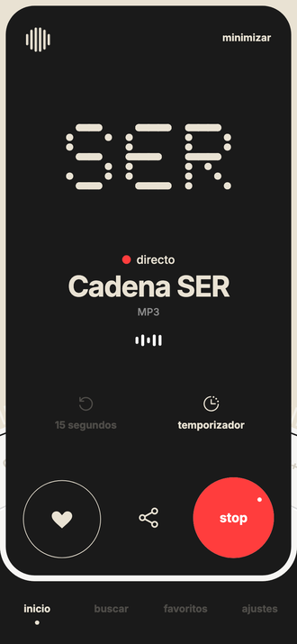
Reproductor
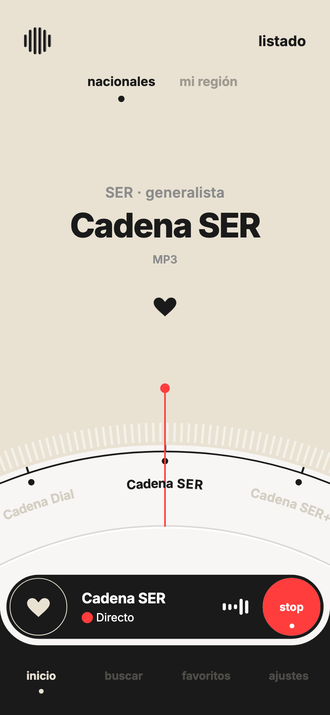
Dial
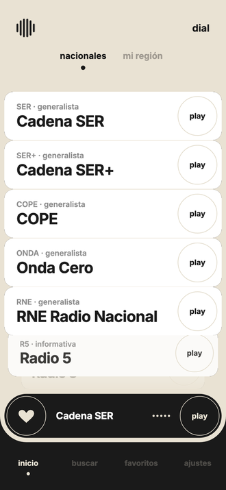
Listado
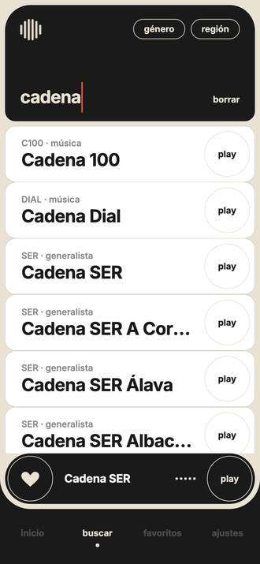
Buscador
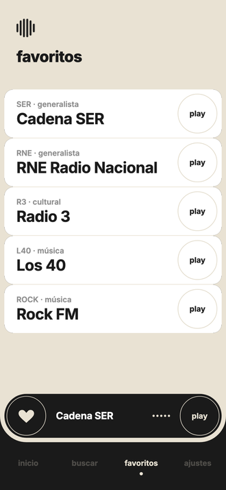
Favoritos
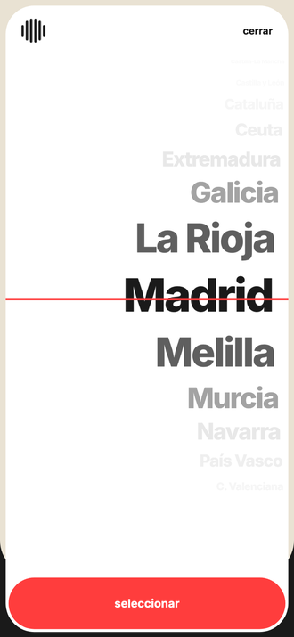
Selector de regiónCapturas compuestas
Las de la ficha de Google Play, con rótulo y fondo. Van mejor para abrir un artículo que para enseñar la aplicación. A 1080×1920.

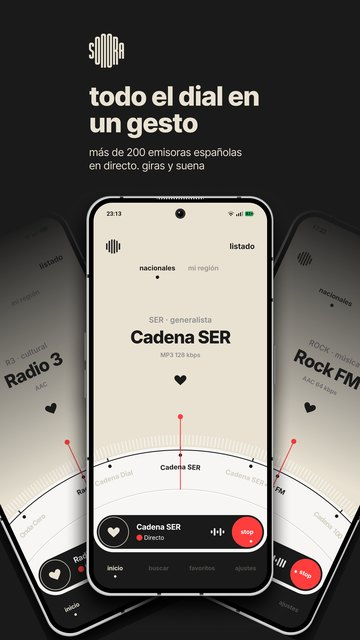
Dial
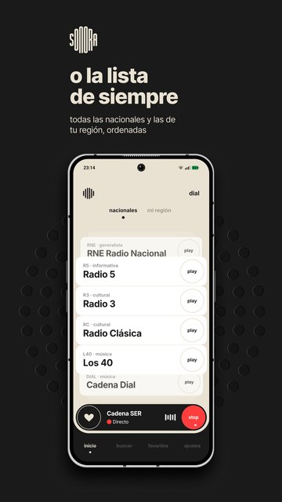
Listado
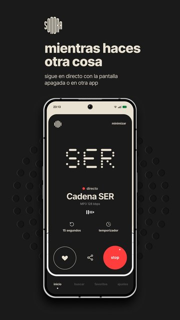
Reproductor
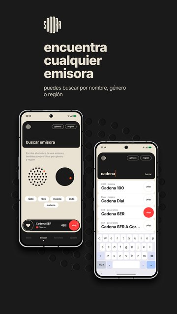
Buscador
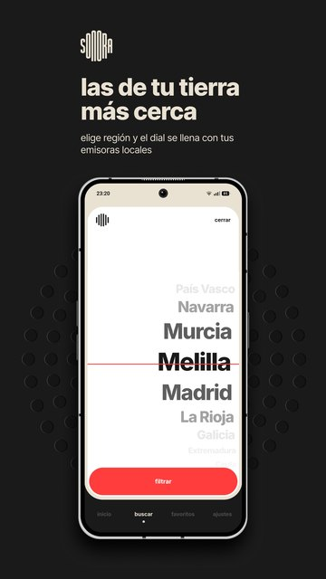
Tu zona
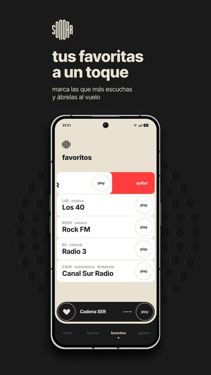
Favoritos
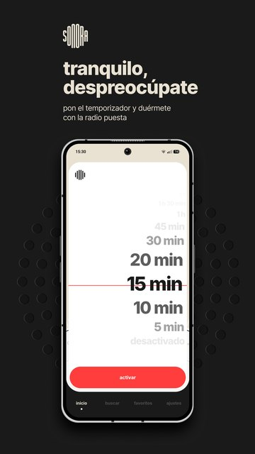
Temporizador
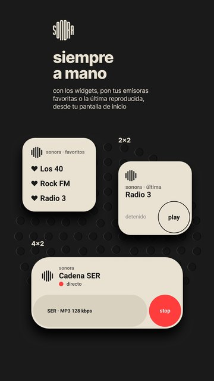
WidgetsGráficos

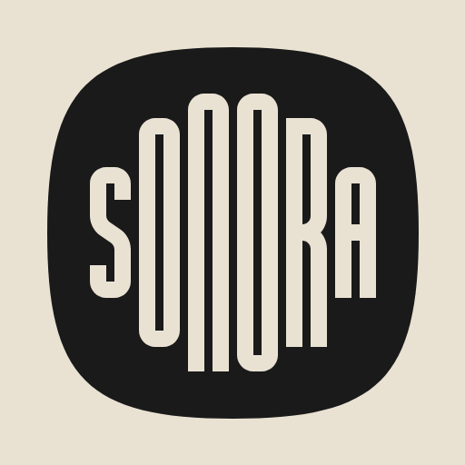
También en SVG


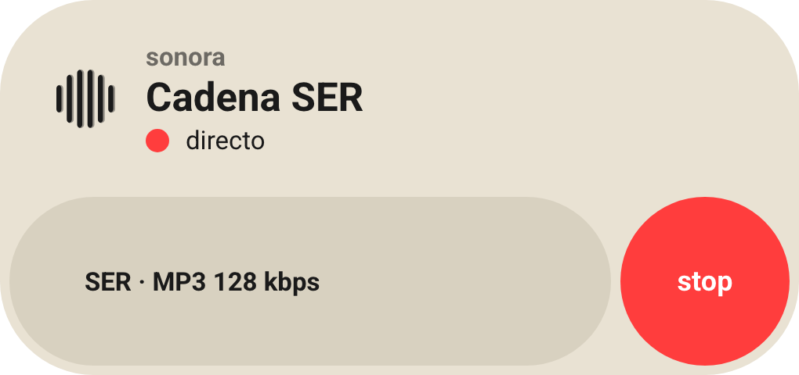
Gráfico destacado · Widget de favoritos · Widget de la última emisora · La tipografía Sonora Dots


Sobre las emisoras
Sonora no aloja ni retransmite nada: abre las señales públicas que cada emisora ya difunde por internet. No hay servidores propios por medio.
Si eres una emisora y quieres que tu señal deje de aparecer, basta con escribir al correo de contacto y se retira.